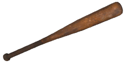
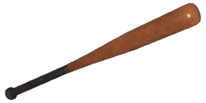
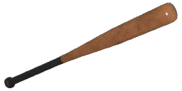
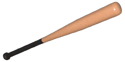

Damage and quality
The base hit damage of melee weapons isn't stored in a file the extractor can read; only the per-quality multiplier is shown.
| Quality | Dilapidated | Worn | Good | Exceptional | Special |
|---|---|---|---|---|---|
| Damage multiplier | ×0.5 | ×0.62 | ×0.75 | ×0.88 | ×1 |
Augments17 of 28 fit
Augments go into slots that depend on quality. Following the in-game rules (as the Gen0 Editor applies them): Worn and Good weapons take one Primary augment, Exceptional and Special take a Primary and a Support augment, and Dilapidated and experimental weapons take none. A ✓ means the augment fits this weapon at that quality; the rules come from the game's equipment compatibility table (augments.json).
Primary augments
| Augment | Worn | Good | Exceptional | Special | Restriction | |
|---|---|---|---|---|---|---|
 | Acidic | ✓ | ✓ | ✓ | ✓ | – |
 | Adhesive Rounds | ✓ | ✓ | ✓ | ✓ | – |
 | EMP Detonation | ✓ | ✓ | ✓ | ✓ | – |
 | Health Stealing | ✓ | ✓ | ✓ | ✓ | – |
 | Machine Disarmer | ✓ | ✓ | ✓ | ✓ | – |
 | Scorching | ✓ | ✓ | ✓ | ✓ | Explosive weapons cannot use this augmentation. |
 | Small Fryer | ✓ | ✓ | ✓ | ✓ | – |
 | Structure Destructor | ✓ | ✓ | ✓ | ✓ | – |
 | Titan Toppler | ✓ | ✓ | ✓ | ✓ | – |
 | Trick Shot Master | ✓ | ✓ | ✓ | ✓ | Only shotguns and melee weapons can use this augmentation. |
 | Uranium Infused | ✓ | ✓ | ✓ | ✓ | – |
Don't fit: Final Round (Only handguns can use this augmentation.); Prone Specialization (Melee weapons cannot use this augmentation.); Rapid Reload (Melee weapons cannot use this augmentation.); Sharpshooter (Melee weapons and explosive weapons cannot use this augmentation.); Unstoppable Shells (Melee weapons and explosive weapons cannot use this augmentation.)
Support augments
| Augment | Exceptional | Special | Restriction | |
|---|---|---|---|---|
 | Flurry of Blows | ✓ | ✓ | Only melee weapons can use this augmentation. |
 | Hit and Run | ✓ | ✓ | – |
 | Power Attacker | ✓ | ✓ | Only melee weapons can use this augmentation. |
 | Quick Learner | ✓ | ✓ | – |
 | Skilled Spotter | ✓ | ✓ | – |
 | Sound Muffling | ✓ | ✓ | – |
Don't fit: Crouching Tiger (Melee weapons cannot use this augmentation.); Hip Shooter (Melee weapons cannot use this augmentation.); Oversized Magazine (Melee weapons and explosive weapons cannot use this augmentation.); Scope Scout (Only weapons that can have a scope attached can use this augmentation.); Slow and Steady (Melee weapons cannot use this augmentation.); Stabilization (Melee weapons cannot use this augmentation.)
Skins1
Skins change only the look. All skins: weapon skins.
 Graffiti Resistance
Graffiti ResistanceItem IDs
The item hash of each quality, as save editors and the Gen0 Editor use them. Each quality is a separate item in the game's item table.
| Quality | Item ID | Icon |
|---|---|---|
| Dilapidated | 22148715 |  |
| Worn | 1375181798 |  |
| Good | 4153491239 |  |
| Exceptional | 1330416502 |  |
| Special | 53763978 |
Where to find it
The world files place 13 copies of the Brännboll bat at fixed spots (on top of the random weapon crates). Each spot has a fixed quality; this table counts them by region.
| Region | Dilapidated | Worn | Good | Total |
|---|---|---|---|---|
| Archipelago | 3 | – | – | 3 |
| South Coast | – | 2 | – | 2 |
| Farmlands | 1 | – | – | 1 |
| Forest | 5 | 1 | – | 6 |
| Marshlands | – | – | 1 | 1 |
| Total | 9 | 3 | 1 | 13 |
The map opens on part of the 13 spots; zoom out (−) or drag to see the rest, use the table, or open the full map.
Every spot, with the nearest named map location and its distance. Coordinates are the game's world x / z, as on the interactive map.
| Quality | Region | Nearest location | Distance (m) | x | z |
|---|---|---|---|---|---|
| Good | Marshlands | Norrmyra Port B3 | 52 | -3,108 | -3,046 |
| Worn | South Coast | Fiskebäck | 100 | -4,650 | 3,752 |
| Worn | South Coast | Guteby Farm | 32 | -2,980 | 3,134 |
| Worn | Forest | Haga | 63 | 998 | 226 |
| Dilapidated | Farmlands | Boo Church | 73 | -900 | -1,756 |
| Dilapidated | Forest | Haga | 124 | 825 | 286 |
| Dilapidated | Forest | Haga | 124 | 825 | 286 |
| Dilapidated | Forest | Haga | 123 | 825 | 286 |
| Dilapidated | Forest | Tornberget | 73 | 904 | 461 |
| Dilapidated | Forest | Tornberget | 41 | 1,016 | 440 |
| Dilapidated | Archipelago | Salthamn | 131 | 1,996 | 3,116 |
| Dilapidated | Archipelago | Salthamn | 130 | 1,996 | 3,114 |
| Dilapidated | Archipelago | Yttervik | 23 | 4,102 | 2,206 |
Related weapons
Other melee: Resistance Pitchfork, Sledgehammer.